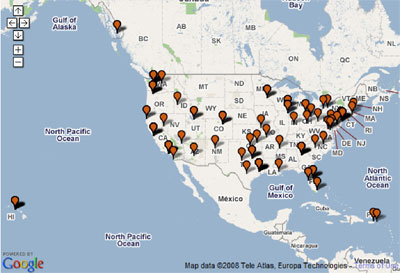
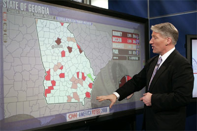
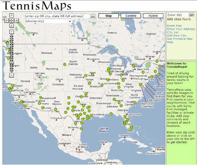
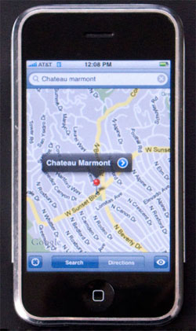
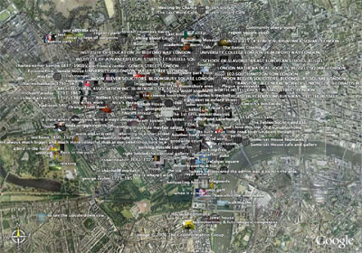
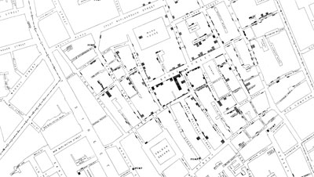
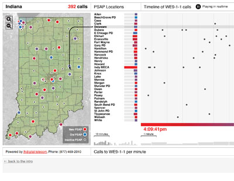
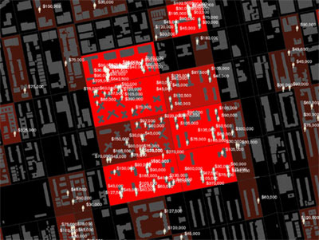

THE INVISIBLE CITY: DESIGN IN THE AGE OF INTELLIGENT MAPS
by Kazys Varnelis and Leah Meisterlin
The long-familiar, two-dimensional paper representations of our world are giving way to active, software-driven interfaces that display multiple layers of data in manifold ways. Instead of the fold-out street map, today we have online mapping applications like Google Maps, capable of giving us precise, turn-by-turn directions. Instead of asking for directions or navigating by landmarks, we use GPS navigation systems in our cars and on our phones. Nor are maps just representations handed down to us: Google mash-ups and geotagging democratize map-making, while handheld GPS devices make it possible for us to accurately make our own maps of the world. Welcome to the age of intelligent maps.
Map of United States

Figure 1: A mashup of airports reporting pet incidents from PetFlight.com.
WHAT DO THESE NEW MAPS MEAN FOR DESIGNERS?
Today's intelligent maps don't just represent spatial relationships, they reveal conditions in the city that were previously hidden in spreadsheets and databases. And it's not just a new representation of the city that emerges out of this data; its a new hybrid city, part physical texture and part data-driven map. As maps have become more complex, they have become our native medium for analyzing environments and societies, essential parts of the decision-making process in policy making. Climatologists, biologists, epidemiologists, transportation engineers, urban planners, community groups, and many others rely on geographic information systems (GIS) software (such as ESRI'sArcGIS) to understand data and to make arguments. To take a vivid example from this election year, the red-and-blue map that depicted a divided country in 2004 has given way to the "magic map"—based on Jefferson Y. Han's Perceptive Pixel multi-touch screen technology—on which CNN's Jeff King illustrates the complex interrelationships in American voting patterns, breaking down the political landscape county-by-county and precinct-by-precinct.

Figure 2: CNN's Magic Map showing election returns.
For designers, the implications are clear. As maps become richer, more complicated, and less predictable, cartography becomes less a matter of convention and more a matter of invention. Our age of intelligent maps demands intelligent map design. The role of the designer in contemporary mapping cannot be overstated. Aesthetics and readability have real-world implications both in use and in meaning. The choice of what to show and how to show not only impacts appearance, it can reframe arguments. Graphic considerations such as cropping, line weights, and even color or typeface translate into statements on territory and boundary, economy and politics.
THE PROS AND CONS OF UBIQUITOUS MAPS
Today, maps are not only intelligent, they are ubiquitous and the ubiquity of maps as a form of visual representation produces a new understanding of space. As we have grown accustomed to navigating the city with our smartphones and our printouts from Google maps, we have come to know it from above, as a two-dimensional, planimetric experience. Instead of seeing ourselves as part of the city fabric, inhabiting a three-dimensional urban condition, we dwell in a permanent out-of-body experience, displaced from our own locations, seeing ourselves as moving dots or pins on a map. In doing so, we experience ourselves less as individuals and more as data moving along a planetary network, composed of both telematic circuits and the physical pathways of the global city.
By altering our conceptions both of the city and of ourselves, ubiquitous maps have earned a place as a key component of network culture. Like Internet search engines, they redefine how we relate to information and to the world. Building on its position as the dominant Internet search engine and growing Web applications platform, Google has also emerged as the dominant player in ubiquitous mapping. Starting its Google Maps service in 2005 to compete with existing online mapping services such as MapQuest and Yahoo! Maps, Google quickly attracted attention with its easy-to-use interface and the quality of its results, enhanced by satellite data from Google's 2004 purchase of geospatial data visualization company Keyhole. Even more important, however, Google Maps' open APIs allowed users to use their own georeferenced data to create mashups, custom maps overlaid on the Google Maps base that they could then integrate into their own Web sites. Users soon developed sites to display data on free Wi-Fi nodes, on real estate available on Craigslist, on locations of cellular towers, tennis courts, or on airports in which pets have been lost, injured, or killed. More recently, the Google My Maps feature allows less technologically sophisticated users to save their own personal annotations and hand-drawn shapes on the company's servers, while Google Street View has added photographic images of highly-trafficked streets. Street View has courted controversy from privacy advocates who suggest that in capturing individuals during its photography sessions, Google has intruded into their private lives.

Figure 3: TennisMaps finds local courts by searching satellite imagery.
In 2006 Google released a revised version of Keyhole's earlier Earth Viewer application as Google Earth, combining satellite imagery from various sources, digital elevation data, and layers of georeferenced information onto a virtual globe. Employing streaming technology and three-dimensional graphics, Google Earth brought the experience of a geographic information system to casual users in a video-game-like form. Just as Google Maps users create mashups, Google Earth users add their own data in the Keyhole Markup Language and, with Google's acquisition of SketchUp, supplement this with three-dimensional models to help replicate the experience of the real world.
Google has also extended its reach by launching Google Maps for Mobile Phones, a hybrid of a handheld-based mapping and navigation application and Web services interface that received widespread attention for the elegant incarnation included with Apple's iPhone. Rivaling dedicated GPS navigation units, Google Maps for Mobile Phones allows users to use "assisted GPS" to identify their positions by triangulating measurements of the signal strength from known cell towers or referencing a database of Wi-Fi router locations. If the spread of the mobile phone made it possible for individuals to remain continually connected and always findable, then Google Maps mobile now makes it possible for them to identify their own location, find driving directions, and search for both specific and general businesses near a given location without the need of a dedicated device.
Google's dominance in information retrieval has its critics, such as Nicholas Carr, who recently asked if our reliance on its search engine was making us stupid by encouraging us to settle for more superficial information instead of deep, reflective interpretation. Carr's concern could easily be extended to Google Maps and other such technologies. Like the search engine, these offer the deceptive suggestion that the company that claims as its mission "to organize the world's information and make it universally accessible and useful," has already done so. Take Google Earth: as this tool comes into widespread use in school curriculums for classes in social and physical sciences, its technological wizardry and its self-contained nature obscure the fact that it is merely a starting point, its data limited in comparison to the huge amount of information that, say, a GIS professional might be able to harness. The very richness of these tools discourages users from seeking information elsewhere, in books, historical atlases, or census data. Similarly, in coming to rely on computer-generated directions from online mapping applications like Google Maps, or for that matter from GPS navigation systems for automobiles, our ability to navigate the world using landmarks atrophies. Here, too, criticality is a problem: these spoon-fed directions are not always valid. Take the story of the hapless group of British schoolchildren and teachers whose bus driver relied on a navigation system to direct them to Hampton Court Palace but instead drove them to a narrow North London street some eighteen miles away. If ubiquitous mapping systems are a powerful new tool, uncritical reliance on them can easily lead users astray.

Figure 4: Google Maps for Mobile make it possible for users to look up locations in unknown cities; however, problems arise when these applications are used uncritically.
Moreover, as Google turns to web applications such as Google Docs, its hard not to observe that Google Maps, Google Earth, Google Maps Mobile and so on replace the model of the open Web with relatively closed independent applications: switching between them or between them and the Web is not, by any means, a seamless transition. We are still far from the "Geospatial Web" that Mike Liebhold of the Institute for the Future called for: a Web that can be browsed through geospatial means, a Web in which geospatial information is returned along with conventional searches.
Finally, it is also disappointing—and perhaps indicative of where Google is ultimately going in all this—to observe that layers of content for ubiquitous mapping applications remain so tied to traditional datasets. For the most part, the kind of innovation that has taken place at the platform level has yet to appear in the data they deliver. Take earlier locative media projects like the Urban Tapestries project by Proboscis in which participants annotated their world with mobile phones and handheld PDAs so that "people could 'author' the environment around them." Here Proboscis intended individuals to attach memories to spaces, thereby building up collective memories in an age poor in such shared experiences.

Figure 5: The "Urban Tapestries" project by Proboscis allows participants to annotate the urban environment.
So, too the holy grail of georeferenced social networking has failed to take hold: ventures like Plazes or DodgeballMySpace or Facebook have. As with the promisesdeferred. And if there are bottom-up possibilities in Google Maps mash-ups or KML layers in Google Earth, they are disappointingly disconnected from the portable maps we carry with us everyday which remain locked down to showing only navigation data and the location of businesses.
Designers of maps and interfaces can rise to meet this challenge by conjuring new interactions between users and the data they may potentially create, by finding ways to develop alternative (e.g., social) datasets and make them accessible, and by finding ways to articulate the incompleteness of the datasets they contain.
INTERVENTIONIST MAPPING
Designing maps isn't just a question of coming up with interfaces—that is, it isn't solely a matter of designing the interaction between information and user. On the contrary, the act of mapping is itself a process of analysis, discovery, and design. It is a process of finding and giving meaning to information, of contextualizing information, and of developing new understandings of the places represented. Mapping allows us to make the invisible visible. Through cartographic visualization and visual analysis, designers are empowered with the ability to bring to the fore layers of information that have shaped our cities and, in turn, reshape them. Visualizing previously obscure data can literally make maps revelatory. Databases begin to mean something when their information is mapped. Through maps, the abstract becomes identifiable. In a classic example recently brought to new attention in Steven Johnson's The Ghost Map, John Snow's 1854 maps comparing the locations of cholera outbreak and the distribution of water pumps set an early precedent for discovery through mapping—for finding patterns by layering information and letting relationships emerge through the process. As making maps allows relationships and patterns to become intuitively apparent, when data is entered into a GIS, these intuited relationships can be quantitatively verified.

Figure 6: John Snow's 1854 map of cholera outbreaks.
The very best maps move beyond the expository and become argumentative, drawing conclusions and providing answers. Many of these maps are challenging, some are utopian, and a few offer a sort of urban catharsis whereby the visualization of previously latent, unseen urban conditions manages to alter the conditions themselves. By revealing the city in maps, a new city is made.
But mapping technologies can also be used to mobilize people politically. Take, for example, the various community-based public participation GIS (ppGIS) initiatives. Organizations such as IAPAD (Integrated Approaches to Participatory Development) bring mapping and GIS technologies (both two- and three-dimensional) to communities, giving them the tools to understand, communicate, and guide their local development. Regrettably, professional designers rarely participate in ppGIS visualizations even if that would aid community efforts and possibly magnify their results. Most likely, the blame for this noninvolvement lies on both sides of the equation. PpGIS organizers and participants may fail to recognize that their initiatives are a form of visual communication that could benefit from informed design. Likewise, professional designers may be failing to see these bottom-up projects as, both, viable and ripe opportunities for collaborative work.

Figure 7: Stamen Design's INdigital project maps 911 calls both spatially and temporally.
In the past few years, this sort of interventionist mapping has been deployed through a variety of means and to a variety of ends. Municipalities and communities have launched online crime maps, allowing residents and policy makers to locate crime statistics in terms of neighborhoods. The availability of such information, however, poses ethical dilemmas. On one hand, such maps reveal spatial crime patterns that allow concerned parties to lobby for specific policy changes, yet they can also stigmatize neighborhoods. Another example with the potential to influence public decision-making is Stamen Design's INdigital Wireless E9-1-1 project, wherein real-time wireless emergency calls are mapped and visually tied to a timeline as calls are made. Here, the designer has taken an active role in describing the dataset, contextualizing it both geographically (by county within Indiana) and temporally (by providing the activity of the last hour leading to the present) and emphasizing these dual contexts through the visualization.

Figure 8: A map from the "Million Dollar Block" project showing incarceration costs block by block.
Turning the crime map on its head, the Justice Mapping Center and Columbia University's Spatial Information Design Lab have generated a series of maps depicting a phenomenon known as Million Dollar Blocks. On these city blocks resident incarceration rates are so high that the state allocates a million dollars or more to imprison residents in a given year. Million Dollar Blocks effectively refocuses the attention on crime away from the locations of incidents and onto the neighborhoods that produce criminals. Implicit in these maps is the argument that state funding may be better used in programming for these communities instead of for the incarceration of their residents.
While both more traditional crime maps and the Million Dollar Blocks project represent only a fraction of argumentative maps, they are particularly potent urban interventions because of their political potential and the impact the map designer has on urban systems. In this era of mapping, GIS offers designers the opportunity to intervene in ways beyond interface or even experience. A compelling map, whether interactive or static, can be dangerous and provocative. It can challenge the conditions it depicts and the very city it represents. Unfortunately, too often GIS output is just formatted according to default settings, leading to clumsy and garish results, the cartographic equivalent of using the templates in PowerPoint to organize a presentation.
As mapping tools become more easily available and as the world becomes more complex, our reliance on maps and mapping is growing, and with that growth designers need to be involved at all stages: from conceptualizing how ubiquitous mapping will continue to change our perception of space to the argumentative capacity of visualization.
Today's map designers must challenge the boundaries of what, how, and by whom data can be created, accessed, and mapped. They must challenge our notions of how maps can represent existing conditions while simultaneously presenting alternatives. They must think about how their datasets, maps, and interfaces can interact with other parts of an increasingly networked, geospatial world, not just imprison them in one-off interfaces. They must challenge the medium of maps, questioning their role in our lives, while challenging the city itself to change.
MAPPING AND THE CITY
In the past, maps existed as much to mark out the unknown, to slowly fill in areas blank except perhaps for the legend "here be monsters," as to represent the known territory of the city. Today, however, with polar exploration, mountain climbing, and even space travel, becoming increasingly banal amusements instead of feats of daring exploration, maps are shifting toward a new relationship between the known and the unknown.
As the world has become mapped, it has become urban. In his seminal 1938 essay "The City as Way of Life," Louis Wirth explained that urban areas traditionally existed in opposition to rural territories, their domination by the market and ties to global trade leading them to be places of diversity and difference instead of established ways of life. Cities were places of mobility and transition in which people—typically born outside the urban area—were deterritorialized, their previous identities stripped as they became city folk. In building new identities, such peoples would be the source of a city's growth, not only providing labor but also the diversity of experience that made them key thinkers, artists, and innovators. In the twenty-first century however, more people live in urban areas than rural hinterlands. Newcomers to the city are more likely to have come from other urban areas than from the countryside. If, under modernization, the metropolis was identified with the developed world and the rural area with the developing world, today the cities of China, India, Korea, Malaysia, and other places once understood as developing, are producing hyper-urban settlements that leave the traditional cities in Europe and North America behind. Finally, the hinterlands themselves are losing their traditional nature as their townsfolk become exposed to the massive resources of modern telecommunications and find themselves neighbors to exurbanites fleeing cities (often even cities in other countries) but demanding many of the qualities of urbanity in their new homes.
In this condition of total urbanity, maps as navigational tools for the physical traversal of space are supplanted by intelligent maps for navigating a contemporary space in which the physical becomes a layer of data in a global informational space. If that space is created by society, it is also a space that, in its massive complexity, has become unknown to us, a second nature simultaneously also a second city and the space in which today's identities are being formed. Much of this world is invisible and it is the task of the designer to help us understand it.
ABOUT THE AUTHORS
Kazys Varnelis, Director of the Netlab, holds a Ph.D. in the history of architecture and urban development. He is on the architecture faculty at Columbia and is a member of the founding faculty of the School of Architecture at the University of Limerick, Ireland. With Robert Sumrell, he runs the new media group AUDC, which published Blue Monday: Stories of Absurd Realities and Natural Histories in 2007. He is also editor of Networked Publics and The Infrastructural City: Networked Ecologies in Los Angeles, both published in 2008.
Leah Meisterlin holds an M.S. in Urban Planning and received an M.Arch. at Columbia. She is a freelance GIS specialist, map designer, and was a researcher at the Netlab when this article was written. She teaches at Barnard College.